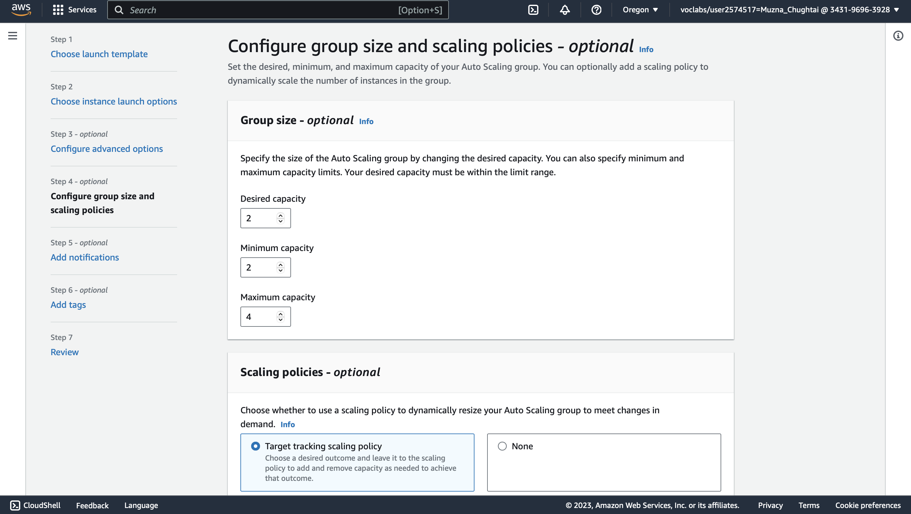
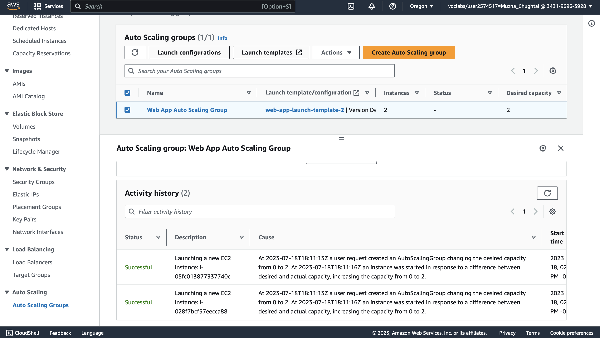

Using Auto Scaling in AWS (Linux)
Task 1: Creating a new AMI for Amazon EC2 Auto Scaling
In this task, we launch a new EC2 instance and then create a new AMI based on that running instance. we use the AWS CLI on the Command Host EC2 instance to perform all of these operations.
Task 1.1: Connecting to the Command Host instance
First we use EC2 Instance Connect to connect to the EC2 instance. we can use this instance to run AWS CLI commands.
- In the EC2 Management Console, we choose Instances and select the Instance and choose connect.
- On the EC2 Instance Connect tab, choose Connect.
Task 1.2: Configuring the AWS CLI
-
To confirm that the Region in which the Command Host instance is running is the same as the lab (the us-west-2 Region), run the following command:
curl http://169.254.169.254/latest/dynamic/instance-identity/document | grep region
we make note of the region from the output of this command. -
To update the AWS CLI software with the correct credentials, run the following command:
aws configure
-
At the prompts, enter the following information:
- AWS Access Key ID: Press Enter.
- AWS Secret Access Key: Press Enter.
- Default region name: Enter the name of the Region from the previous steps in this task (for example, us-west-2). If the Region is already displayed, press Enter.
- Default output format: Enter json
Now you are ready to access and run the scripts detailed in the following steps.
- To access these scripts, enter the following command to navigate to their directory:
cd /home/ec2-user/
Task 1.3: Creating a new EC2 Instance
you use the AWS CLI to create a new instance that hosts a web server.
- To inspect the UserData.txt script that was installed for you as part of the Command Host creation,
run the following command:
more UserData.txt
- Run the following command with the credential details:
aws ec2 run-instances --key-name vockey --instance-type t3.micro --image-id ami-04d0def24be0d27d6 --user-data file:///home/ec2-user/UserData.txt --security-group-ids sg-0fdc8de6ebdc55676 --subnet-id subnet-04d62fc7b677bd532 --associate-public-ip-address --tag-specifications 'ResourceType=instance,Tags=[{Key=Name,Value=WebServer}]' --output text --query 'Instances[*].InstanceId'
The output of this command provides you with an InstanceId
- Make note of the InstanceId value
- To use the aws ec2 wait instance-running command to monitor this instance's status. Run the following command:
aws ec2 wait instance-running --instance-ids i-0a156adfaf3226690
- Your instance starts a new web server
- To obtain the public DNS name, use the following command:
aws ec2 describe-instances --instance-id i-0a156adfaf3226690 --query 'Reservations[0].Instances[0].NetworkInterfaces[0].Association.PublicDnsName'
the output will return the DNS
- Run the following command:
http://ec2-54-202-131-129.us-west-2.compute.amazonaws.com/index.php
Task 1.4: Creating a Custom AMI
We create a new AMI based on that instance that we just created.
- To create a new AMI based on this instance, we run following command with the new instance id:
aws ec2 create-image --name WebServerAMI --instance-id i-0a156adfaf3226690
Task 2: Creating an auto scaling environment
In this task, we create a load balancer that pools a group of EC2 instances under a single Domain Name System (DNS) address. we use auto scaling to create a dynamically scalable pool of EC2 instances based on the image that we created in the previous task. Finally, we create a set of alarms that scale out or scale in the number of instances in your load balancer group whenever the CPU performance of any machine within the group exceeds or falls below a set of specified thresholds.
We can perform the following task by using either the AWS CLI or the AWS Management Console. I am using AWS Management Console.
Task 2.1: Creating an Application Load Balancer
We create a load balancer that can balance traffic across multiple EC2 instances and Availability Zones
- On the EC2 Management Console, in the left navigation pane, locate the Load Balancing section, and choose Load Balancers.
- Choose Create load balancer.
- In the Load balancer types section, for Application Load Balancer, choose Create.
- On the Create Application Load Balancer page, in the Basic configuration section, configure the following option:
- For Load balancer name, enter WebServerELB
- In the Network mapping section, configure the following options:
- Select VPC & For Mappings, choose both Availability Zones listed. for the first Availability Zone, choose Public Subnet 1 and the second Availability Zone, choose Public Subnet 2.
- For Security group remove any default and choose HTTPAccess.

- In the Listeners and routing section, choose the Create target group link.
- On the Specify group details page, in the Basic configuration section, configure the following options:
- For Choose a target type, choose Instances.
- For Target group name, enter webserver-app
- In the Health checks section, for Health check path, enter /index.phpand choose next

- On the Register targets page, choose create target group.
- Return to the Load balancers browser tab, and locate the Listeners and routing section. For Default action, choose Refresh to the right of the Forward to dropdown list.
- From the Forward to dropdown list, choose webserver-app.
- At the bottom of the page, choose Create load balancer.
- To view the WebServerELB load balancer that you created, choose View load balancer.
- make note of DNS name of load balancer.

Task 2.2: Creating a launch template
In this task, we create a launch template for our Auto Scaling group. A launch template is a template that an Auto Scaling group uses to launch EC2 instances. When we create a launch template, we specify information for the instances, such as the AMI, instance type, key pair, security group, and disks.
- On the EC2 Management Console, locate the Instances section, and choose Launch Templates and choose create launch template.
- On the Create launch template page, in the Launch template name and description section, configure the following options:
- Set the launch template name
- Set Template version description
- For Auto Scaling guidance, select Provide guidance to help me set up a template that I can use with EC2 Auto Scaling.
- In the Application and OS Images (Amazon Machine Image) - required section, choose the My AMIs tab. Check that WebServerAMI is already chosen.
- In the Instance type section, choose the Instance type dropdown list, and choose t3.micro.
- In the Key pair (login) section, confirm that the Key pair name dropdown list is set to Don't include in launch template.
- In the Network settings section, choose the Security groups dropdown list, and choose HTTPAccess.
- Choose Create launch template & view launch templates.
Task 2.3: Creating an Auto Scaling group
In this task, we use your launch template to create an Auto Scaling group.
- Choose web-app-launch-template, and then from the Actions dropdown list, choose Create Auto Scaling group.
- On the Choose launch template or configuration page, in the Name section, for Auto Scaling group name enter name and choose Next.
- On the Choose instance launch options page, in the Network section, configure the following options:
- Select VPC
- From the Availability Zones and subnets dropdown list, choose Private Subnet 1 (10.0.2.0/24) and Private Subnet 2 (10.0.4.0/24) and choose Next.
- On the Configure advanced options – optional page, configure the following options:
- In the Load balancing – optional section, choose Attach to an existing load balancer.
- In the Attach to an existing load balancer section, configure the following options:
- Choose Choose from your load balancer target groups.
- From the Existing load balancer target groups dropdown list, choose webserver-app | HTTP.
- In the Health checks section, under Additional health check types, select Turn on Elastic Load Balancing health checks and choose Next.
- On the Configure group size and scaling policies – optional page, configure the following options:
- In the Group size – optional section, enter the following values:
- Desired capacity:2
- Minimum capacity: 2
- Maximum capacity: 4
- In the Scaling policies – optional section, configure the following options:
- Choose Target tracking scaling policy.
- For Metric type, choose Average CPU utilization.
- For Target value, enter 50

- In the Group size – optional section, enter the following values:
- Choose Next.
- On the Add notifications – optional page, choose Next.
- On the Add tags – optional page, choose Add tag and configure the following options:
- For Key, enter Name
- For Value - optional, enter WebApp
- Choose Next.
- On the Review page, choose Create Auto Scaling group.
Task 3: Verifying the auto scaling configuration
In this task, you verify that both the auto scaling configuration and the load balancer are working by accessing a pre-installed script on one of your servers that will consume CPU cycles, which invokes the scale out alarm.
- In the left navigation pane, choose Instances.
- Once the instances have completed initialization, in the left navigation pane in the Load Balancing section, choose Target Groups, and then select your target group, webserver-app.
- On the Targets tab, verify that two instances are being created. Refresh this list until the Health status of these instances changes to healthy.
Two new instances named WebApp are being created as part of your Auto Scaling group. While these instances are being created, the Status check for these two instances is Initializing.
Observe the Status check field for the instances until the status is 2/2 checks passed. Wait for the two new instances to complete initialization before you proceed to the next step.
Task 4: Testing auto scaling configuration
We can now test the web application by accessing it through the load balancer.
- Open a new web browser tab, and paste the DNS name of the load balancer that you copied earlier into the address bar, and press Enter.
- On the web page, choose Start Stress.
- On the EC2 Management console, in the left navigation pane in the Auto Scaling section, choose Auto Scaling Groups.
- Select Web App Auto Scaling Group.
- Choose the Activity tab. 
After a few minutes, you should see your Auto Scaling group add a new instance. This occurs because Amazon CloudWatch detected that the average CPU utilization of your Auto Scaling group exceeded 50 percent, and your scale-up policy has been invoked in response.